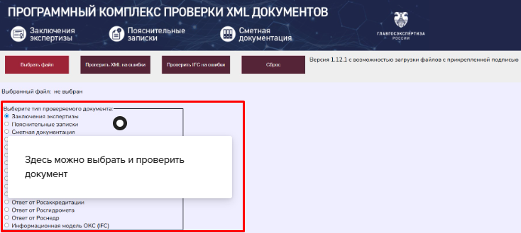
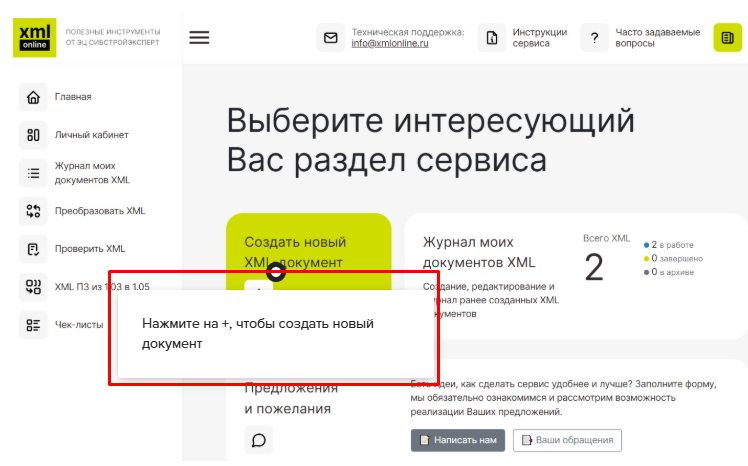
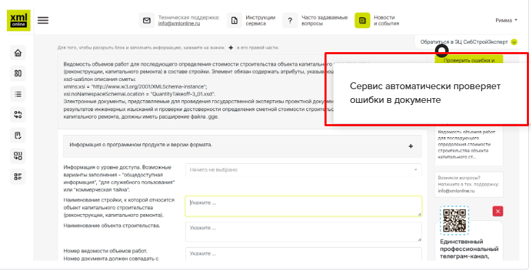
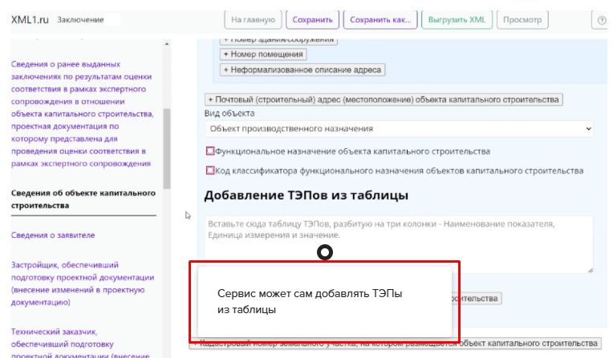
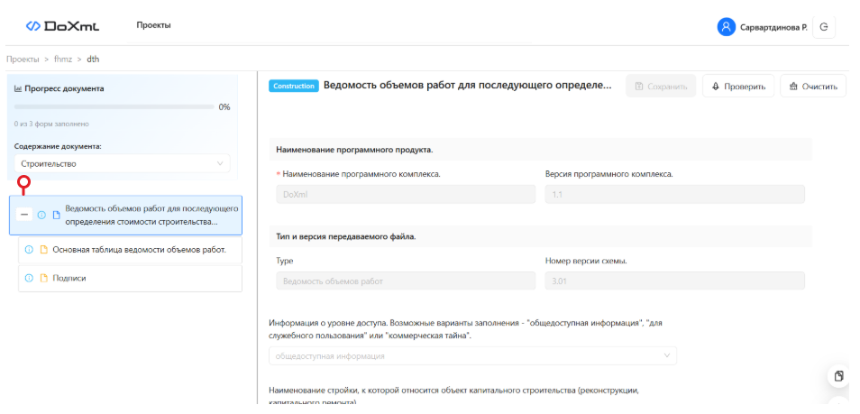

Как формировать документы в формате XML
Для работы с XML-схемами используйте специализированное ПО или сервисы. Это могут быть инфосистемы электронного документооборота. Например, Exon, ЦУС, «Адепт», Dacon и др. А могут быть сервисы и платформы формирования XML-документов. К примеру, сервисы от ГГЭ, XMLONLINE.RU, XML1.ru, docxml.ru. Без них со схемой можно только ознакомиться – посмотреть структуру файла или изучить требования. А вот сформировать документ не выйдет.
XML-схемы в первую очередь предназначались для разработчиков ПО, которые реализуют их поддержку в прикладных системах для проектировщиков, подрядчиков и заказчиков. Расскажем про сервисы, которые могут формировать документы в XML.
Сервисы формирования XML-документов Главгосэкспертизы
Главгосэкспертиза предоставляет бесплатные сервисы, которые помогают готовить ПД в электронном виде. Все они доступны через Единую цифровую платформу экспертизы (ЕЦПЭ). Зайти туда можно, например, через «Госуслуги». Каждый сервис предназначен для своего вида документа.
| Сервис | Задачи |
|---|---|
| Сервис комплексной проверки сметных расчетов (КПСР) | Формирует сметную документацию |
| Сервис формирования пояснительной записки (СФПЗ) | Используют, чтобы подготовить пояснительную записку |
| Сервис формирования задания на проектирование (СФЗП) | Готовит задания на проектирование |
Рассмотрим работу на примере сервиса СФПЗ.
Пример. Как работать с сервисом СФПЗ
Зайдите в ЕЦПЭ и авторизуйтесь, например, через «Госуслуги». Далее скачайте сервис для формирования ПЗ. В скачанном архиве сервиса есть подробная инструкция, как установить ПО.
Теперь можно формировать документ. В архиве есть руководство пользователя, где описали шаги. Структура документа полностью повторяет XML-схемы, что обеспечивает соответствие итогового файла утвержденным шаблонам. Это облегчает интеграцию с другими системами и разработку ПО, но иногда вызывает трудности у пользователей из-за глубокой вложенности элементов.
Из-за ошибки в XML-файле могут отклонить заявление на экспертизу. Поэтому в сервисе есть инструмент, который проверит структуру XML-документов. Он поможет:
- выбрать тип документа для проверки;
- выявить ошибки и несоответствия;
- просматривать документ в привычном виде через XSLT-преобразование;
- контролировать актуальность шаблонов.

Онлайн-сервис XMLonline.ru
Бесплатный онлайн-сервис XMLonline.ru работает через браузер, и в нем можно сформировать документы при подготовке ПД. Какие именно документы он формирует, описали в памятке.
Материал к уроку (PDF)
Какие документы формирует XMLonline.ru
PDF получен с исходной страницы. Поля для названия организации и других персональных данных оставлены пустыми.
Для того чтобы создавать файлы в этом сервисе, зарегистрируйтесь на сайте XMLonline.ru. Зайдите в личный кабинет и выберите «создать новый XML-документ».

Выберите вид документа, который нужно создать. Например, ведомость объемов работ. И далее в журнале документов появляется созданный файл, который можно заполнить. Интерфейс сервиса простой и интуитивно понятный. Когда внесете сведения, сервис автоматически проверит документ.

Практическая часть
Встроенное упражнение — сохранен текст
Статическое представление
Flipcard
Текстовые фрагменты упражнения извлечены с исходной встроенной страницы. Проверка ответов и анимация здесь не работают.
- Перед отправкой в экспертизу вы решили проверить XML-файл в «Программный комплекс проверки XML-документов». В интерфейсе проверки вы видите только нагромождение тегов и кода, в котором сложно ориентироваться. Какую конкретную техническую функцию вам нужно активировать, чтобы увидеть этот документ в привычном виде (таблицы, текст)?
- Смотреть ответ
- XSLT-преобразование.
- Следующий вопрос
Онлайн-сервис XML1.ru
Платный сервис XML1.ru формирует документы для проектной документации. Например, заключение экспертизы, пояснительную записку и задание на проектирование. Сервис имеет расширенные функции:
- вставка технико-экономических показателей (ТЭП) из таблицы;
- поиск организаций по ИНН/ОГРН;
- предзаполнение из ПЗ.

Онлайн-сервис DoXML
Платный сервис DoXML формирует документы для проектной документации. Можно создать пояснительную записку, ведомость объемов работ и задание на проектирование. Есть пробный бесплатный доступ, удобный интерфейс и всплывающие подсказки.

Практическая часть
Упражнение 1.
Встроенное упражнение — сохранен текст
Статическое представление
Connect-cards
Текстовые фрагменты упражнения извлечены с исходной встроенной страницы. Проверка ответов и анимация здесь не работают.
- Вам нужно быстро составить Ведомость объемов работ , не устанавливая лишнего ПО на компьютер.
- Заказчик просит подготовить Задание на проектирование через бесплатный государственный сервис.
- Вам необходимо сформировать Сметную документацию и проверить расчеты.
- Вам нужно подготовить Пояснительную записку, при этом вы хотите автоматически подтянуть данные об организациях по их ИНН
- Выбор сервиса под задачу
- Вы работаете над комплектом ПД. Распределите, в каких сервисах вы будете формировать следующие документы
Упражнение 2.
Встроенное упражнение — сохранен текст
Статическое представление
TestCards
Текстовые фрагменты упражнения извлечены с исходной встроенной страницы. Проверка ответов и анимация здесь не работают.
- У вас есть большая таблица с технико-экономическими показателями в Excel. Вам нужно перенести эти данные в XML-формат пояснительной записки, не вбивая каждую цифру вручную. Какой сервис вы выберете и почему?
- DoXML, так как там есть всплывающие подсказки.
- XML1.ru, так как в нем есть функция вставки ТЭП из таблицы.
- XMLonline.ru, так как он работает через браузер.